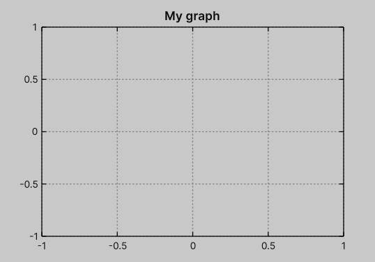
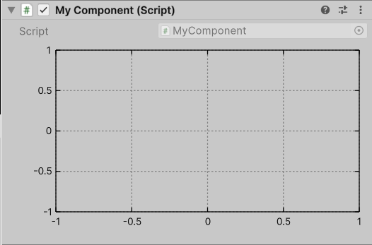
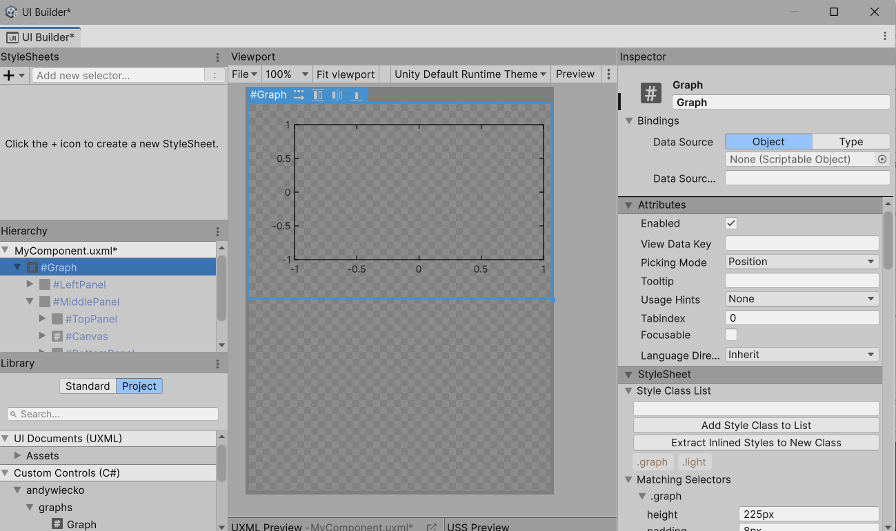
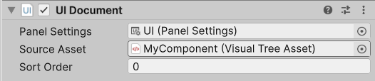
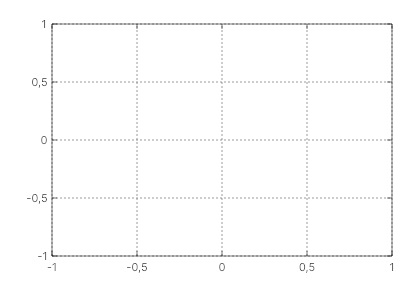

Graph
Basics
When using this package, the only class you will typically create manually is Graph.
This is the main container (VisualElement) for your plots.
The hierarchy is fairly complex (see the UXML reference) because a graph contains multiple UI elements such as keys, tics, labels, and axes.
Some of these elements use standard UI Toolkit styling classes and properties, which can be configured via .uss and C#. In addition, this package introduces custom properties (see the USS reference).
In the tutorial, you will learn how to customize different parts of the graph when needed.
The simplest graph is an empty graph with no plots.
To create a graph titled "My graph" with dimensions 600x400, you can use the following:
var graph = new Graph
{
Title = "My graph",
style = { width = 600, height = 400 },
};
This creates a graph with a size of 600×400 pixels, including labels (the canvas area is automatically adjusted to account for other UI elements).
Keep in mind that in some contexts, such as editor inspectors, you may prefer an auto-sized graph that adapts to the available panel width.
This can be achieved by simply omitting explicit dimensions.
An empty graph by default uses auto ticks and an axis range of [-1, +1].

Most graph canvas settings can be configured using the Theme 1 property.
All configuration options will be discussed in later sections of this tutorial.
var graph = new Graph
{
Title = ...,
style = { ... },
XAxis = { ... },
YAxis = { ... },
Theme = { ... },
};
Editor
You can create a graph and attach it to, for example, a custom editor or editor window.
Below you can find an example of a user-defined MyComponent with an overridden inspector that displays an empty graph.
using UnityEngine;
public class MyComponent : MonoBehaviour
{
}
using andywiecko.graphs;
using UnityEditor;
using UnityEditor.UIElements;
using UnityEngine.UIElements;
[CustomEditor(typeof(MyComponent))]
public class MyComponentEditor : Editor
{
public override VisualElement CreateInspectorGUI()
{
var root = new VisualElement();
InspectorElement.FillDefaultInspector(root, serializedObject, this);
var graph = new Graph();
root.Add(graph);
return root;
}
}

Runtime
The simplest way to generate a graph at runtime (GameView) using this package is by creating a .uxml document and adding a Graph element to it.
First, create a MyComponent.uxml file in the Assets/ folder.
<ui:UXML xmlns:xsi="http://www.w3.org/2001/XMLSchema-instance" xmlns:ui="UnityEngine.UIElements" xmlns:uie="UnityEditor.UIElements" noNamespaceSchemaLocation="../../UIElementsSchema/UIElements.xsd" editor-extension-mode="False">
<andywiecko.graphs.Graph style="width: 400px; height: 300px;"/>
</ui:UXML>
Alternatively, you can use the UI Builder to create and edit the .uxml file visually.

Finally, assign this .uxml file to a UI Document component attached to a MonoBehaviour.

After that, you should see the graph rendered in the GameView.

-
The name is chosen to clearly distinguish it from Unity's built-in
styleproperty.↩